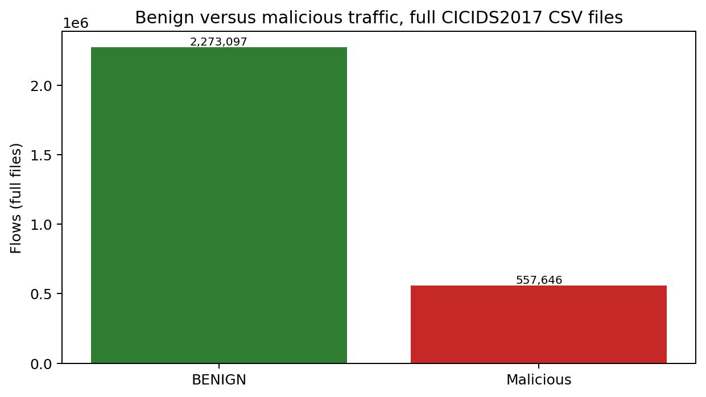
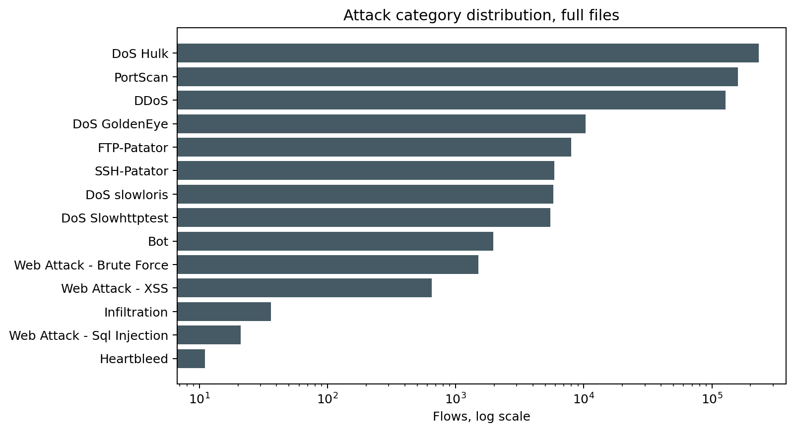
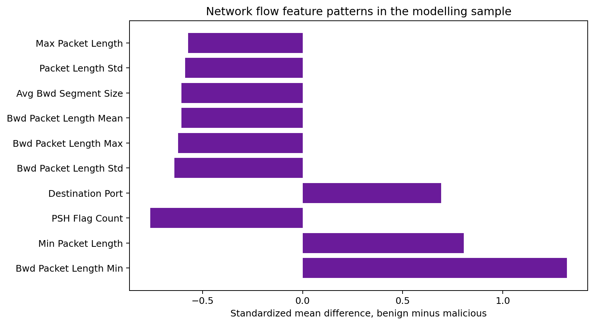
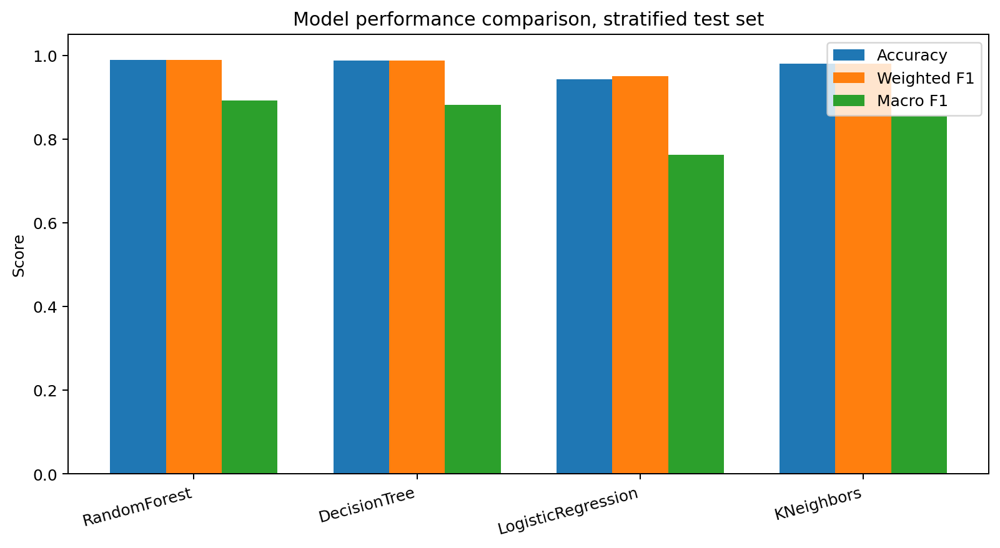
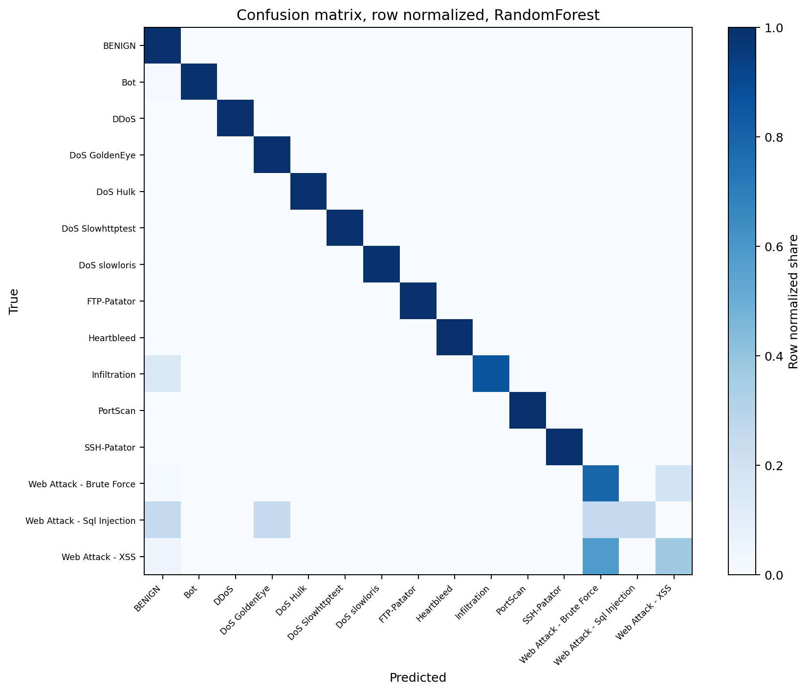
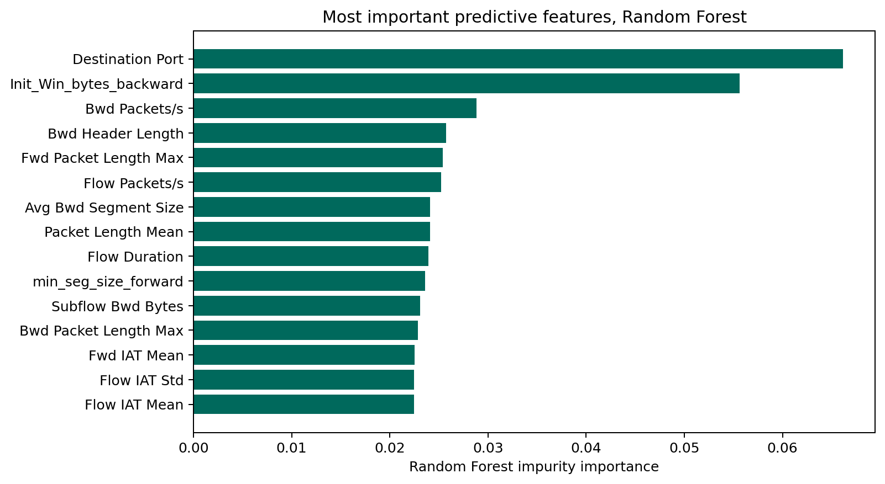
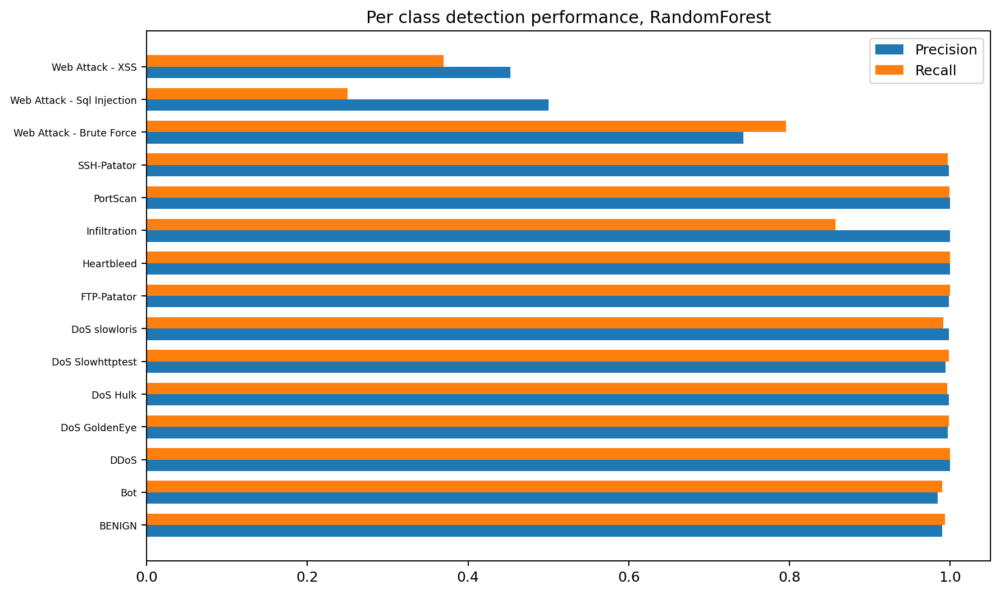

Independent project · Network security and machine learning
Network Intrusion Detection and Traffic Analysis
An offline analysis of labelled network flows from CICIDS2017. Four classifiers were compared on their ability to separate benign traffic from malicious traffic and to name the attack category, and a second evaluation tested what happens when the test day contains attack types the model never saw in training.
Technologies: Python, Pandas, NumPy, Scikit-learn, and Matplotlib. The full files contain 2,830,743 flows, but the models were trained and tested on a cleaned, capped sample of 89,390 records. Those two numbers describe different things, and the results below keep them separate. This is a benchmark study, not a validated production intrusion detection system.
Overview
The research question has three parts: how well can standard classifiers identify benign and malicious flows from CICFlowMeter flow statistics, which attack categories are hardest to detect, and how does performance change when the test day contains attack types that were absent from training?
Two evaluations answer different parts of that question. A stratified random split measures how well the models separate classes when training and test data are drawn from the same pooled sample. A day based split, training on Monday to Thursday and testing on Friday, measures something closer to deployment, where new traffic and new attacks arrive after training. The gap between the two results is a central finding of this project.
Dataset source and attribution
The dataset is CICIDS2017, published by the Canadian Institute for Cybersecurity at the University of New Brunswick. Official source: UNB CICIDS2017. The publisher makes the dataset publicly available for researchers who cite the paper below. The CSV files used in this run came from a public mirror that reproduces the publisher licence notice (c01dsnap/CIC-IDS2017). The official UNB page remains the authoritative source.
Required citation: Sharafaldin, I., Lashkari, A. H., and Ghorbani, A. A. (2018). Toward Generating a New Intrusion Detection Dataset and Intrusion Traffic Characterization. 4th International Conference on Information Systems Security and Privacy (ICISSP 2018).
Only the eight labelled flow CSV files were used. PCAP files were not downloaded or analysed, and no raw CSV or PCAP data is published on this page or included in the source download. The reference repository Hatem-Elashmawy/network-intrusion-detection-ml (MIT License) informed the task framing only. This project is an independent implementation, no code was copied from it, and none of its performance figures are reported here. See the NOTICE file in the download for the full attribution text.
Network traffic exploration and class imbalance
Counting all eight files in full gives 2,830,743 flows: 2,273,097 benign (80.3 percent) and 557,646 malicious (19.7 percent). The 15 classes are extremely uneven. At the top, DoS Hulk has 231,073 flows, PortScan 158,930, and DDoS 128,027. In the middle, DoS GoldenEye (10,293), FTP-Patator (7,938), SSH-Patator (5,897), DoS slowloris (5,796), DoS Slowhttptest (5,499), Bot (1,966), and the web attacks (1,507 brute force, 652 XSS) are far smaller. At the bottom, Infiltration has 36 flows, Web Attack - Sql Injection 21, and Heartbleed 11.
That imbalance shapes everything that follows. A model can score high accuracy and weighted F1 by doing well on the large classes while failing on rare ones, which is why macro F1, which averages classes equally, is reported alongside them and used to select the best model. Rare attacks are difficult to detect for a simple reason: the model has very few examples to learn from, and the test set has very few to judge by. Heartbleed has 2 test records and Web Attack - Sql Injection has 4 in the stratified test set, so a single flow changes their scores sharply. Their per class figures are indicative, not stable estimates.
Data cleaning, sampling, and duplicate removal
- Column names were trimmed, labels were normalised, and a repeated header column (
Fwd Header Length.1) was dropped in each file. - A modelling sample was built by capping each class at 15,000 records, so that training was manageable on local hardware. Rare classes were kept in full. This capped sample, not the full 2.8 million flow distribution, is what all model metrics describe.
- Exact duplicate feature rows were removed before splitting: 10,226 duplicates removed from 99,616 sampled rows, leaving 89,390 cleaned records with 69 features. Exact feature overlap between the train and test sets after de-duplication is 0.
- Eight constant or all missing columns (the forward and backward average bulk rate, bytes per bulk, and packets per bulk columns, plus
Bwd PSH FlagsandBwd URG Flags) were dropped. - Infinite values were replaced with missing values, and missing values were handled by median imputation fitted inside each model pipeline.
The per class cap changes the class mix by design. In the modelling sample, BENIGN has 14,872 records, DDoS 14,999, and PortScan 13,752, while Heartbleed still has 11 and Web Attack - Sql Injection 21. Metrics on this sample cannot be read as performance on live traffic with a natural class distribution.
Machine learning methodology and leakage prevention
Random Forest, Decision Tree, K-Nearest Neighbors, and Logistic Regression were compared on the same stratified 80/20 split (71,512 training rows, 17,878 test rows), stratified by label with random_state 42. No large hyperparameter search was used. Accuracy, weighted and macro precision, recall and F1, and per class scores were recorded for every model, with a confusion matrix for the best model by macro F1.
- Duplicates were removed before the split, so identical feature rows cannot appear in both training and test data. The recorded train and test exact feature overlap is 0.
- Identifier columns were checked. The MachineLearningCSV files contain no Flow ID, source IP, destination IP, or timestamp columns, so there were no identifier features to drop, and the label was not used as a feature.
- Imputation and scaling are inside each scikit-learn Pipeline and are fitted on training data only, so test rows cannot influence the values used to prepare them.
- Highly correlated features were reported rather than silently removed. Ten feature pairs have an absolute correlation of at least 0.95 in the sample, several of them exactly 1.0, for example Total Fwd Packets with Subflow Fwd Packets. These are artefacts of how CICFlowMeter computes related statistics.
Model comparison on the stratified test set
| Model | Accuracy | Weighted F1 | Macro F1 |
|---|---|---|---|
| Random Forest | 0.9889 | 0.9886 | 0.8928 |
| Decision Tree | 0.9869 | 0.9876 | 0.8811 |
| K-Nearest Neighbors | 0.9808 | 0.9804 | 0.8550 |
| Logistic Regression | 0.9434 | 0.9509 | 0.7630 |
The two tree based models lead, and Random Forest is the best model by macro F1. The ranking by accuracy is not the whole story: every model's macro F1 is well below its accuracy and weighted F1, because macro F1 gives the rare classes the same weight as BENIGN. Logistic Regression shows the widest gap, from 0.9434 accuracy to 0.7630 macro F1. That gap is the class imbalance appearing in the metrics.
Stratified random splits can give optimistic results, and this one should be read that way. Training and test rows are drawn from the same pooled sample, collected on the same five days in the same simulated testbed, so the test rows closely resemble the training rows. Real deployment separates training and test traffic in time, and attacks change. The day based evaluation below shows how much of this performance survives that separation.
Per-class attack detection results
Per class results for the best model, Random Forest, on the stratified test set:
| Class | Precision | Recall | F1 | Support |
|---|---|---|---|---|
| BENIGN | 0.9903 | 0.9936 | 0.9919 | 2,974 |
| Bot | 0.9847 | 0.9898 | 0.9872 | 391 |
| DDoS | 0.9997 | 0.9997 | 0.9997 | 3,000 |
| DoS GoldenEye | 0.9971 | 0.9985 | 0.9978 | 2,057 |
| DoS Hulk | 0.9983 | 0.9961 | 0.9972 | 2,315 |
| DoS Slowhttptest | 0.9943 | 0.9981 | 0.9962 | 1,046 |
| DoS slowloris | 0.9981 | 0.9916 | 0.9949 | 1,077 |
| FTP-Patator | 0.9983 | 1.0000 | 0.9992 | 1,187 |
| Heartbleed | 1.0000 | 1.0000 | 1.0000 | 2 |
| Infiltration | 1.0000 | 0.8571 | 0.9231 | 7 |
| PortScan | 0.9996 | 0.9989 | 0.9993 | 2,750 |
| SSH-Patator | 0.9984 | 0.9969 | 0.9977 | 644 |
| Web Attack - Brute Force | 0.7429 | 0.7959 | 0.7685 | 294 |
| Web Attack - Sql Injection | 0.5000 | 0.2500 | 0.3333 | 4 |
| Web Attack - XSS | 0.4528 | 0.3692 | 0.4068 | 130 |
The well represented attack families (DDoS, the DoS variants, PortScan, both Patator classes, and Bot) are separated almost perfectly on this split. The web attacks are not: Web Attack - XSS has F1 0.4068 and Web Attack - Brute Force 0.7685, and most of their errors are confusion with each other and with BENIGN, as the confusion matrix shows. Web Attack - Sql Injection (F1 0.3333, recall 0.2500 on 4 test records) and Heartbleed (a perfect score on 2 test records) are too rare in the test set for their scores to mean much either way. That contrast, reliable scores where data are plentiful and unstable scores where they are not, is what macro F1 summarises.
Feature analysis
The strongest Random Forest feature in this run is Destination Port, with impurity importance 0.066, followed by Init_Win_bytes_backward (0.056) and Bwd Packets/s (0.029). The remaining top features are packet length, header length, inter-arrival time, and flow rate statistics, each between about 0.020 and 0.026.
That ranking needs care. In a fixed testbed, each attack tool tends to target set ports and run from set hosts, so a port number can identify the experiment setup as much as any general property of attacks. On a real network, where services and attacks use different ports, that feature would carry less signal. Impurity importance also shows which features the trees split on, not which features cause attacks. Feature importance here is a description of this model on this dataset, not a causal explanation and not a detection rule.
Day based evaluation and unseen attacks
CICIDS2017 was generated on a schedule: different attacks ran on different days. The second evaluation respects that structure. A Random Forest with the same preprocessing was trained on Monday to Thursday flows (52,998 records) and tested on Friday flows (36,392 records).
Friday contains three attack classes that never appear from Monday to Thursday: Bot, DDoS, and PortScan. Those classes account for 30,704 of the 36,392 Friday test rows, about 84 percent. The only Friday class the model was trained on is BENIGN, with 5,688 rows.
- A closed set classifier can only output labels it saw in training. It cannot predict Bot, DDoS, or PortScan, because those labels were never available to it. Every one of those 30,704 rows is therefore assigned to some other class. Accuracy across all Friday rows is 0.1558, and macro F1 is 0.0435.
- On the 5,688 Friday rows whose class was seen in training, accuracy is 0.9967. That figure is often quoted out of context, so it needs stating plainly: those rows are all BENIGN. The number shows the model recognises Friday benign traffic well. It is not evidence of successful detection of unseen attacks, because no unseen attack row is in that subset, and none was detected as its true class.
- The honest summary of the day based test is therefore two sided. Seen traffic is handled well, and unseen attack classes are missed entirely, by construction. A production system would need a way to flag traffic that matches no known class, rather than forcing it into one.
Visualizations
These seven figures were generated by the analysis. The first two describe the full 2,830,743 flow files. The rest describe the capped modelling sample of 89,390 records and its test split.







Limitations and conclusion
- CICIDS2017 is a historical, simulated testbed dataset from July 2017. Traffic patterns, attack tools, and networks have changed since then, so these results do not demonstrate real world intrusion detection capability.
- The modelling sample is capped at 15,000 records per class. Headline metrics describe that capped sample with its altered class mix, not the full 2.8 million flow distribution and not live traffic.
- The stratified split draws training and test rows from the same pooled sample, which flatters the models. The day based split gives a less comfortable and more realistic picture.
- Closed set classifiers cannot detect attack classes that were absent from training. On Friday, those classes were 84 percent of the test rows, and all of them were missed as their true class.
- Rare classes remain rare after capping. Heartbleed, Infiltration, and the SQL injection class have 11 to 36 records in the full files, so their scores are indicative only.
- Flow features are aggregated statistics. Payload content, host context, and operational alert triage are outside this analysis, and several flow features are near duplicates of each other.
- Nothing here was tested against live traffic, alert workloads, false positive costs in an operations setting, or drift over time.
On this historical dataset and capped sample, the tree based models separated most flow categories more reliably than the linear and distance based baselines, and Random Forest was strongest overall (accuracy 0.9889, macro F1 0.8928 on the stratified test set). The same project also shows why that score is not enough for an intrusion detection claim. Rare web attack categories were hard to classify even when they were in the training data, and attack classes that appear only on a later day cannot be named at all by a closed set model. This is an offline analysis of a public benchmark. It is not a validated production intrusion detection system, and it does not claim real world detection capability.
The downloadable archive contains the Python implementation, tests, requirements, README, NOTICE with the dataset attribution, machine readable results, the case study text, and these figures. It does not contain raw CSV files, PCAP files, credentials, or a virtual environment. The analysis code was written for this portfolio, and the dataset remains subject to the publisher terms cited above.